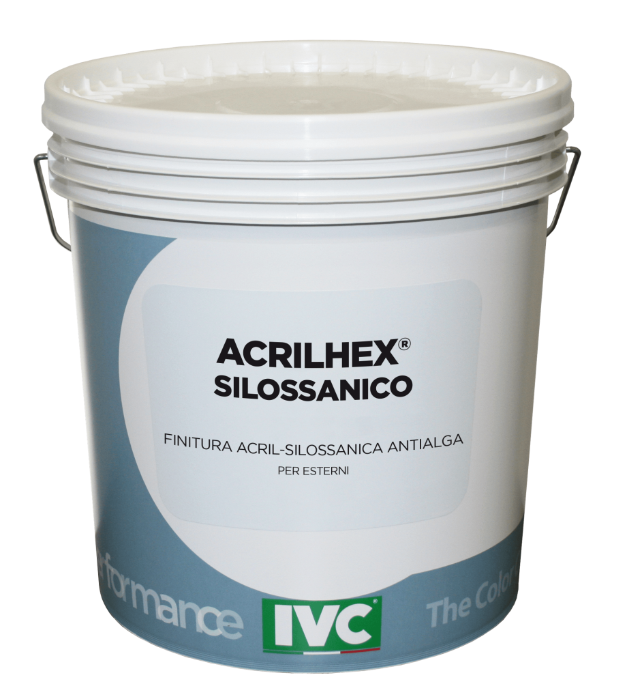

TERMOCOATHEX RIVESTIMENTO ACRIL-SILOSSANICO
Rivestimento acril-silossanico per esterni, a base di resine acriliche-silossaniche in dispersione acquosa. Pensato per cicli di verniciatura ad alta resistenza e per proteggere le facciate da acqua, alghe e agenti atmosferici.
Dettagli tecnici
- Elevata traspirabilità: classe V1.
- Elevata aderenza e idrorepellenza, con basso assorbimento d’acqua.
- Elevata stabilità del colore e resistenza ad alcali, smog e salsedine.
- Finitura per superfici esterne, disponibile in confezione a secchio.